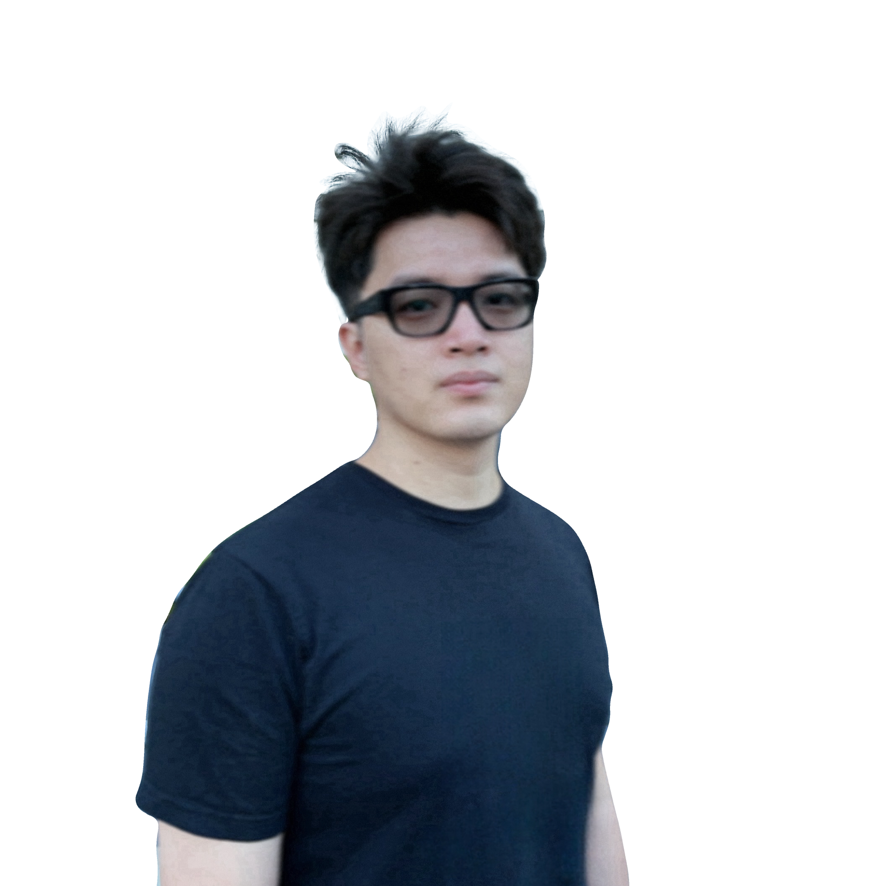

Loom
A compiler and exploration framework for heterogeneous multi-core spatial accelerators, connecting a shared hardware model, compilation, simulation, and reproducible evaluation.
Ph.D. dissertation, 2026
Research Scientist, Architecture Research Group
NVIDIA Research
My research is in computer architecture, programmable accelerators, and agentic tools for chip design and electronic design automation (EDA).
I received my Ph.D. in Computer Science from UCLA in September 2026, advised by Tony Nowatzki in the PolyArch Research Group. My dissertation is on full-stack compilation and exploration of programmable accelerator systems.
I created Humanize 1 at UCLA and am part of Humanfia. My current work brings coding agents into architecture and EDA, with independent review and executable checks.

Sep 2026 Joined NVIDIA Research and completed my Ph.D. at UCLA.
I am interested in making specialized hardware easier to design and program. My work ranges from accelerator microarchitecture and on-chip networks to compilers, architecture exploration, and agent-assisted engineering.
A compiler and exploration framework for heterogeneous multi-core spatial accelerators, connecting a shared hardware model, compilation, simulation, and reproducible evaluation.
Ph.D. dissertation, 2026
I created Humanize 1 at UCLA: an implementation and independent-review loop for coding agents. I contribute to Humanfia, where we extend this approach to longer engineering tasks.
Creator of Humanize 1
Characterization of hardened FPGA networks-on-chip and hierarchical network overlays for multi-chiplet reconfigurable systems.
Research, 2025 - 2026
Automated generation of programmable spatial architectures and FPGA overlays, bringing compilation, hardware implementation, and design-space exploration into one flow.
ISCA 2020 / MICRO 2022
I use coding agents daily and built ai-usage to track them across my machines. Here is the aggregate usage from my own setup.
Humanize 1 / Humanize 2 / Humanfia
Totals include cache reads. Generated tokens are shown separately.
Loading usage summary.
* Equal contribution.
MICRO 2022
Best Paper Runner-up
ISCA 2021
IEEE Micro Top Picks 2022
ISCA 2020
IEEE Micro Top Picks 2021, Honorable Mention
MICRO 2019
IEEE Micro Top Picks 2020
University of California, Los Angeles
Advisor: Tony Nowatzki.
Loom: Full-Stack Compilation and Automated Exploration of Heterogeneous Multi-Core Spatial Accelerator Systems
University of California, Los Angeles
Xi'an Jiaotong University
Summer research: UCLA PolyArch Research Group (Summer 2018); University of Lausanne (2017).
September 2026 - present
Research Scientist
June 2022 - October 2023
Hardware Engineering Intern
Summer 2021
CPU Microarchitecture Intern
Artifact Evaluation Committee, HPCA 2021.
Journal reviewer: ACM TACO, ACM TODAES, ACM TRETS, ACM TECS, IEEE TC, IEEE TCAD, IEEE TVLSI, IEEE CAL, IEEE JETCAS, Journal of Systems Architecture, Journal of Signal Processing Systems.